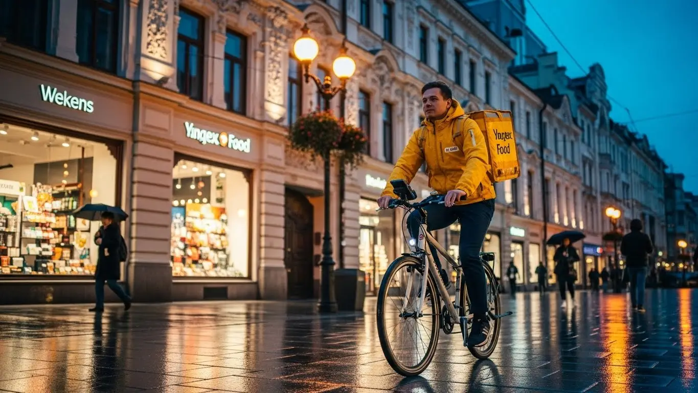
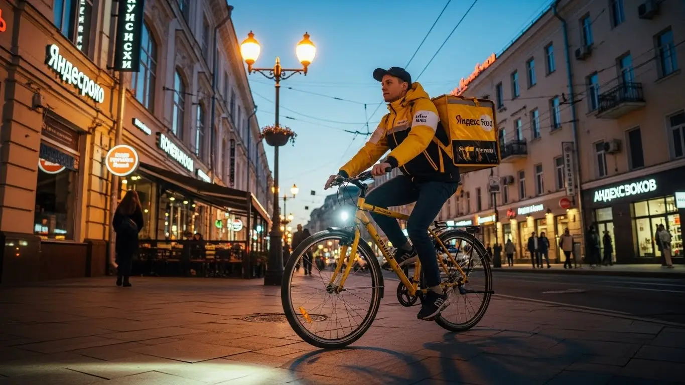
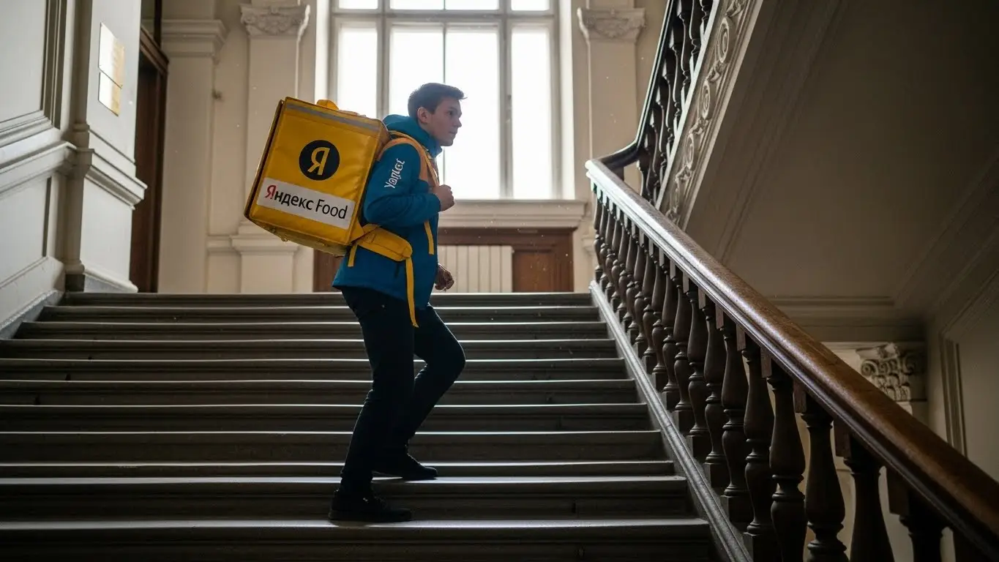
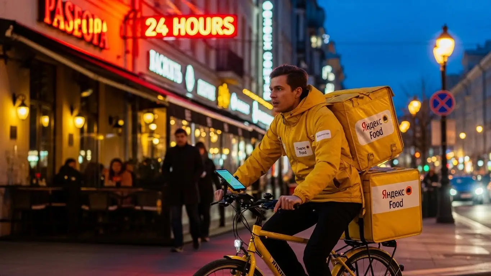
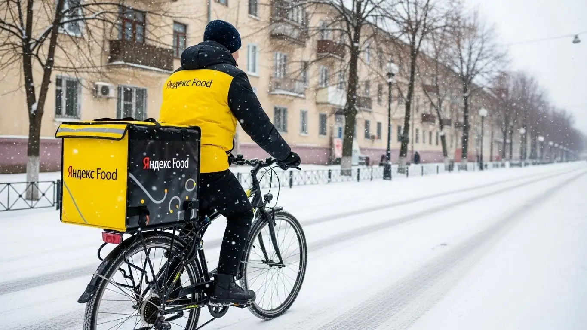

Работа курьером Яндекс Еды в Адлере в 2025-2026 году: доход и условия

- Работа курьером Яндекс Еды в Адлере: для кого эта вакансия и что вы получите
- Сколько вы будете зарабатывать курьером в Адлере: калькулятор дохода и разбор выплат
- Реальный заработок курьера в Адлере: смены и месячный доход
- График работы и форматы занятости
- Требования к кандидату и документы
- Самозанятость, налоги и юридическая чистота
- Пошаговое оформление и первый выход на линию в Адлере
- Пешком, на вело или на авто: что выгоднее в Адлере
- Районы, маршруты и «топовые» зоны заказов в Адлере
- Безопасность, страховка, штрафы и оплата простоя
- Плюсы и возможные минусы работы курьером в Адлере
- Реальные истории и отзывы курьеров из Адлера
- Ответы на главные вопросы о работе курьером Яндекс Еды в Адлере
- Короткие ответы на главные вопросы
- Заключение: стоит ли работать курьером в Адлере?
Все города
Думаешь, работа курьером в Адлере — это просто крутить педали у моря и получать легкие деньги? Как бы не так. Многие видят только верхушку айсберга, а потом сталкиваются с мертвыми пробками на Ленина, убитой подвеской после частного сектора и вопросом: «А где обещанные тысячи в день?». Я расскажу, как на самом деле выглядит работа курьером Яндекс Еды в Адлере, без розовых очков и рекламных обещаний. Это не очередной общий текст, это инструкция по выживанию и заработку именно в нашем городе.
Поверь, 9 из 10 новичков сдуваются в первый же месяц, потому что не понимают местной специфики. Они не считают реальные расходы на бензин или запчасти для велосипеда, не знают, как работает приоритет в приложении и почему в Курортном городке заказов густо, а в спальниках за рекой Мзымта — пусто. Чтобы узнать все детали, включая актуальные условия, калькулятор дохода и форму для быстрой заявки, изучи подробную информацию про работу курьером Яндекс Еда в Адлере. В итоге они катаются впустую, теряя время у ТРЦ «Мандарин» или пытаясь прорваться к отелю в час пик, вместо того чтобы работать там, где есть деньги.
В этом гиде мы всё разложим по фактам. Мы честно посчитаем, сколько реально можно положить в карман пешему, вело- и автокурьеру в Адлере с учётом всех расходов. Я покажу на карте самые «жирные» районы и лучшее время для работы, расскажу, как адлерская жара или зимние дожди влияют на заказы и чаевые, и главное — за что реально штрафуют и как этого избежать. Ты поймешь, стоит ли эта игра свеч именно для тебя.
Меня зовут Алексей. Я сам начинал с желтого рюкзака здесь, в Адлере, а сейчас у меня свой небольшой таксопарк-партнёр. Я видел эту кухню со всех сторон и знаю все подводные камни, о которых молчат в рекламе. Так что пристегивайся, или, если ты пеший, надевай удобную обувь. Сейчас я разложу тебе всё по полочкам, без воды и пустых обещаний.
Но прежде чем нырять в детали, давай быстро пробежимся по ключевым моментам в формате короткого гида. Так ты сразу поймёшь, о чём пойдёт речь.
Что ты точно узнаешь из этого разбора
В этой статье ты ТОЧНО узнаешь:
- Сколько реально можно заработать в Адлере за смену пешком, на велосипеде и на авто, и как погода влияет на доход?
- В каких районах Адлера больше всего заказов и как выбирать «жирные» слоты в приложении, чтобы не кататься впустую?
- За что на самом деле штрафуют в Яндекс Еде, как работает страховка и что такое «оплата простоя», если заказов нет?
- Как за 15 минут оформить самозанятость, какие документы нужны и почему без этого никак?
- Что выгоднее в Адлере — быть пешим курьером в центре, гонять на велосипеде по спальникам или брать дальние заказы на авто?
А если тебе некогда читать всю статью — переходи сразу к заключению, где ты найдёшь короткие ответы на все эти вопросы и указания, в каких разделах искать подробности.
А чтобы было ещё нагляднее, вот основные цифры и факты о работе в Адлере в одной картинке.
Работа курьером в Адлере: ключевые цифры
Доход в час
450–650 ₽
В пиковые часы и выходные дни с учетом бонусов.
Доход за смену
3 500–4 800 ₽
Средний заработок за 8-10 часов на вело или авто.
Сезонный спрос
+30% летом
Поток туристов в Адлере значительно увеличивает число заказов.
Чаевые от клиентов
25-35%
Доля заказов, где клиенты оставляют чаевые онлайн.
Работа курьером Яндекс Еды в Адлере: для кого эта вакансия и что вы получите
Давай начистоту: работа курьером — это не для всех, но для многих это отличный вариант. В Адлере, с его курортной спецификой, у этой вакансии есть свои плюсы. Здесь всегда много туристов и местных, которые не хотят выходить из дома или отеля, особенно в жару или дождь. Это значит, что заказов хватает, а доход курьера напрямую зависит от твоего желания двигаться.
Эта работа — конструктор. Ты сам решаешь, когда и сколько работать, какой транспорт использовать и в каком районе развозить заказы — это и есть свободный график. Никто не стоит над душой с планами и отчётами. Есть только ты, приложение «Яндекс Про» и город. Если подходить к делу с умом, можно не только найти хорошую подработку, но и сделать доставку основным источником заработка. Главное — понять, подходит ли тебе такой формат.

Кому подойдёт эта работа в Адлере
Эта вакансия, по сути, универсальна. Я вижу на линии совершенно разных людей, и у каждого своя причина здесь работать. Чаще всего к нам приходят:
- Студенты. Идеальная подработка для совмещения с учёбой. Можно выходить на пару часов после пар или работать полные дни на выходных. График гибкий, деньги капают на карту почти сразу — то, что нужно, чтобы не просить у родителей.
- Люди без опыта или те, кто ищет первую работу. Устроиться можно без опыта, порог входа минимальный. Не нужно резюме на пять страниц и три собеседования. Основные требования — смартфон, желание работать и базовое умение ориентироваться в городе. Всему остальному научат на коротком онлайн-инструктаже.
- Те, кому нужна подработка. Например, ты работаешь в отеле посменно или в сфере обслуживания, где график плавающий. В свободные дни или вечера можно спокойно выходить на линию и получать дополнительный доход в 10–15 тысяч в неделю.
- Водители. Если у тебя есть своя машина, работа курьером на автомобиле может быть выгоднее, чем в такси. Меньше общения с пассажирами, заказы есть всегда, особенно на дальние расстояния, которые хорошо оплачиваются.
- Все, кому важен свободный график и быстрые деньги. Не хочешь сидеть в офисе с 9 до 6? Нужны деньги здесь и сейчас, а не через месяц? Это твой вариант. Ежедневные выплаты приходят на карту, а планировать смены можно хоть на день вперёд.
Главные преимущества для жителей районов Голубые Дали, Черемушки, Курортный городок
Одно из главных удобств — возможность работать прямо у дома. Тебе не нужно тратить час-полтора на дорогу до «офиса». Ты просто выходишь из подъезда, включаешь приложение «Яндекс Про» и начинаешь получать заказы в своём районе.
Например, если ты живёшь в Голубых Далях, ты можешь обслуживать весь этот большой спальный район. Здесь много многоэтажек, а значит, и заказов из магазинов и местных кафешек. Не нужно ехать в центр, чтобы найти работу. То же самое касается и Черемушек — плотная застройка и куча заведений обеспечивают стабильный поток заказов.
А если твой дом в районе Курортного городка, то в сезон это вообще золотая жила. Ты будешь доставлять заказы в отели, пансионаты и апартаменты. Туристы заказывают много и часто, а расстояния обычно небольшие. Это позволяет выполнять больше заказов в час и, соответственно, больше зарабатывать, не уезжая далеко от дома.
Краткое обещание по доходу и условиям
Что по деньгам? Зарплата курьера в Адлере вполне приличная. При частичной занятости, выходя на 3–4 часа в день, можно спокойно заработать 1500–2500 рублей. Если же рассматривать это как основную работу и уделять ей 8–10 часов, то доход за смену может доходить до 4500 рублей и выше, особенно в выходные или плохую погоду. В месяц при полной занятости активные ребята зарабатывают до 80 000–90 000 рублей.
Ключевые условия работы просты и прозрачны. Во-первых, начать можно без опыта. Во-вторых, у тебя будет свободный график, который ты сам составляешь в приложении. В-третьих, ежедневные выплаты: отработал смену — получил деньги на карту. Никаких задержек и ожиданий «зарплатного дня». Ты сам контролируешь свой доход и можешь получить заработанное в любой момент.
Вот недавний пример из практики. Парень, работает администратором в отеле в Имеретинке, график два через два. В свои выходные берёт велосипед и катает заказы по району Олимпийского парка и окрестностям. За два полных дня спокойно делает 8-10 тысяч рублей сверху к основной зарплате. Говорит, что это и фитнес, и дополнительный доход без начальников.
В итоге, работа курьером в Адлере — это гибкий инструмент для заработка. Она подходит и как временная подработка, и как постоянный источник дохода. Главное — не лениться и работать в тех районах, где есть спрос. Мой совет: начни со своего района, чтобы привыкнуть к процессу, а потом уже изучай самые «рыбные» места в городе.
Сколько вы будете зарабатывать курьером в Адлере: калькулятор дохода и разбор выплат
Вопрос «сколько зарабатывает курьер Яндекса» — главный для любого новичка. Сразу скажу: фиксированной зарплаты здесь нет. Твой доход — это сумма множества факторов, и он может меняться каждый день. Но в этом и плюс: ты можешь напрямую влиять на свой заработок. Если понять, как устроена система оплаты, можно заработать значительно больше среднего.
Система в Яндекс Еде прозрачная. В приложении «Яндекс Про» ты видишь стоимость каждого заказа ещё до того, как его принять. Там же отображаются все бонусы, коэффициенты и твой итоговый баланс. Никаких скрытых вычетов или непонятных комиссий. Давай разберём по косточкам, из чего складываются твои деньги.
Из чего складывается доход курьера
Твой заработок за смену — это не просто плата за количество доставок. Это целая формула, где учитывается много всего. Вот основные компоненты:
- Оплата за заказ. Это базовая стоимость за то, что ты забираешь и доставляешь заказ. Она включает в себя подачу в ресторан или магазин и вручение клиенту.
- Доплата за расстояние. Чем дальше ехать или идти, тем больше заплатят. Система рассчитывает оптимальный маршрут и добавляет плату за каждый километр пути.
- Повышающие коэффициенты. Это самое интересное. В часы пик (обед, ужин), в плохую погоду (дождь, сильная жара) или в районах с высоким спросом на карте в «Яндекс Про» появляются зоны, окрашенные в разные цвета — от жёлтого до фиолетового. Заказы в таких зонах умножаются на коэффициент, и их стоимость может вырасти в 1.5, 2, а то и в 3 раза.
- Бонусы. Сервис часто предлагает персональные цели. Например, «выполни 10 заказов за день и получи бонус 500 рублей». Это отличный стимул для активной работы.
- Чаевые. Клиенты могут отблагодарить тебя за хорошую работу через приложение. Все чаевые — твои, сервис не берёт с них комиссию. В курортном Адлере, кстати, чаевые оставляют довольно часто.
- Оплата простоя. Важный момент. Если ты пришёл в ресторан, а заказ ещё не готов, сервис начнёт платить за ожидание после 10 минут. Твоё время — деньги, и это здесь понимают.
- Компенсация проезда. На некоторых заказах, особенно дальних, может быть предусмотрена частичная компенсация проезда на общественном транспорте.
Как пользоваться калькулятором дохода
Чтобы ты мог прикинуть свой потенциальный заработок ещё до выхода на линию, на сайте есть специальный калькулятор. Пользоваться им элементарно.
Сначала ты выбираешь свой город — Адлер. Затем указываешь, как планируешь доставлять: пешком, на велосипеде или на личном автомобиле. После этого выставляешь, сколько часов в день и сколько дней в неделю готов работать. Например, 4 часа 5 дней в неделю. Нажимаешь кнопку «Рассчитать», и система показывает примерный диапазон твоего дохода за день и за месяц. Это, конечно, прогноз, но он основан на реальной статистике по городу и помогает сориентироваться.
Калькулятор дохода курьера в Адлере
Примерный доход в месяц:
72 000 ₽
* Расчет является примерным и основан на средней ставке 450 ₽/час для Адлера. Реальный доход зависит от спроса, бонусов, чаевых и типа доставки.
Чтобы узнать подробнее про условия и заполнить анкету, переходи на страницу работа курьером Яндекс Еда в твоём городе — там собрана вся актуальная информация и есть форма для быстрой заявки.
Примеры расчёта для пешего, вело- и авто‑курьера в Адлере
Давай на конкретных примерах, чтобы было понятнее. Цифры примерные, но близки к реальности.
- Пеший курьер в центре. Допустим, ты работаешь в районе ТРЦ «Мандарин» и на набережной. Здесь много кафе, расстояния короткие. За 4-часовую смену в будний день ты можешь выполнить 8–10 заказов. Средний чек заказа — 150–200 рублей. Итог: около 1200–2000 рублей за смену. В выходной или в дождь с коэффициентами эта сумма легко может вырасти до 2500 рублей.
- Велокурьер между спальниками. Ты работаешь на велосипеде, курсируя между Голубыми Далями и центром Адлера. Ты быстрее пешего, можешь брать заказы на 2–3 км. За 6-часовую смену ты сделаешь 12–15 заказов. Средний чек выше за счёт расстояния — 200–250 рублей. Заработок за смену составит 2500–3500 рублей.
- Автокурьер по всему городу. Работая курьером на своем авто, ты можешь брать самые выгодные заказы: из гипермаркетов, на дальние расстояния, в отдалённые районы или даже в Красную Поляну. За 8-часовую смену ты можешь заработать 4000–5000 рублей и больше, особенно если поймаешь несколько заказов с высоким коэффициентом. Из этой суммы нужно вычесть расходы на бензин, но всё равно получается очень выгодно.
Сравнение типов доставки в Адлере
| Параметр | Пеший курьер | Велокурьер | Автокурьер |
|---|---|---|---|
| Средний доход в час | 300–500 ₽ | 400–650 ₽ | 500–800 ₽ (без учёта расходов) |
| Оптимальные районы | Центр, набережная, Курортный городок | Спальные районы (Голубые Дали, Черемушки), центр | Весь Адлерский район, дальние заказы, пригород |
| Плюсы | Нет расходов, полезно для здоровья, работа в плотном потоке | Скорость, манёвренность, экономия на транспорте | Комфорт, большие и дорогие заказы, независимость от погоды |
| Минусы / Расходы | Физическая нагрузка, медленная скорость, зависимость от погоды | Нужен свой велосипед, усталость, сложно в сильный дождь | Расходы на бензин и амортизацию авто, возможны пробки |
Как-то раз я сам вышел на линию на своем авто в сильный ливень. Весь город стоял в пробках, пешие и велокурьеры попрятались. Приложение «Яндекс Про» просто разрывалось от заказов с фиолетовыми коэффициентами. Я взял несколько доставок из центра в район Весёлого и Молдовки. За 3 часа сделал почти 4000 рублей грязными. Да, потратил на бензин, но чистая прибыль была отличной.
В общем, твой заработок — в твоих руках. Он складывается из множества частей, и на большинство из них ты можешь повлиять. Мой совет: не игнорируй карту спроса в приложении. Лучше подождать 15 минут и взять заказ из «горящей» зоны, чем сразу хватать первый попавшийся дешёвый.
Реальный заработок курьера в Адлере: смены и месячный доход
А теперь давай о реальных деньгах. Сколько можно заработать, если устроиться курьером в сервисы Яндекса в Адлере? Цифры зависят от трёх вещей: на чём ты передвигаешься, сколько часов работаешь и насколько умён твой подход. Здесь нет фиксированной зарплаты, твой заработок — это результат твоей работы. Но чтобы ты понимал порядок цифр, я разложу всё по полочкам.
В Адлере, как в любом курортном городе, есть своя специфика. Летом заказов вал, зимой — поспокойнее, но работа есть всегда. Главное — понимать, где и когда быть, чтобы не кататься впустую. Ниже — конкретные цифры и советы, которые помогут тебе с первого дня выходить на хороший доход в Яндекс Еде и Доставке.

Диапазон дохода для подработки и полной занятости
Если ты ищешь подработку на 2–4 часа в день, например, после учёбы или основной работы, то цифры будут примерно такие. Пеший курьер в среднем делает 1000–1800 рублей за такую смену. Велокурьер за то же время заработает больше за счёт скорости — где-то 1500–2500 рублей. Самый высокий доход у автокурьера, он может за несколько часов увезти 2000–3500 рублей, особенно если берёт дальние заказы или работает в непогоду.
При полной занятости, то есть на смене 8–10 часов, заработок растёт соответственно. Пеший курьер может рассчитывать на 2500–4000 рублей в день. Велосипедист — на 3500–5000 рублей. Водитель на своём авто при полной загрузке и правильном выборе зоны может зарабатывать и 5000, и 7000 рублей в день, а в пиковые дни сезона — и того больше. В месяц при графике 5/2 у автокурьера может выходить и 80 000, и 120 000 рублей — это уже полноценная зарплата. Но это работа, а не лёгкие деньги, придётся покрутиться.
Как район, время суток и погода влияют на доход
Запомни три кита высокого заработка: пиковые часы, плохая погода и высокий спрос. В Адлере пики стандартные: обед с 12:00 до 15:00 и ужин с 18:00 до 21:00. В это время заказов больше всего, и именно тогда в приложении «Яндекс Про» появляются зоны с повышенными коэффициентами — так называемые «фиолетовые зоны». Работать в них выгоднее всего. Выходные и праздничные дни — это, по сути, один большой пик.
Погода — твой лучший друг. Как только начинается дождь или, наоборот, стоит адлерская жара за +30, люди ленятся выходить из дома, и количество заказов резко растёт. Коэффициенты взлетают, и за тот же маршрут ты получаешь в 1.5–2 раза больше. Плюс, в плохую погоду клиенты чаще оставляют хорошие чаевые из благодарности. Сезонность в Адлере тоже играет огромную роль: с мая по октябрь работы валом, особенно в районах Курортного городка и Имеретинской низменности, где полно туристов.
Советы по увеличению заработка от опытных курьеров
Чтобы зарабатывать больше, а уставать меньше, нужно работать головой. Во-первых, всегда планируй смены заранее и старайся брать плановые слоты в зонах с высоким спросом — это даёт приоритет при распределении заказов.
Во-вторых, не сиди на одном месте. Если видишь, что в твоём районе заказов мало, открой карту в «Яндекс Про» и двигайся туда, где горит фиолетовый цвет. Часто это зоны вокруг крупных ТРЦ, вроде «Мандарина» или «Сити Плазы».
Очень эффективно комбинировать разные типы доставки, если есть возможность. Например, в центре Адлера, где летом пробки и узкие улочки, лучше работать на велосипеде или самокате. А для заказов в отдалённые районы, например, в сторону Весёлого или Молдовки, лучше использовать автомобиль. Некоторые мои ребята так и делают: держат в машине складной велосипед и по ситуации меняют транспорт, чтобы быть максимально эффективными.
Один из моих водителей, парень лет 30, работает курьером на автомобиле на полную занятость. Его стратегия проста: он начинает день в 11 утра в спальных районах Голубые Дали или Черемушки, развозит заказы из Яндекс Еды и обеды. К вечеру, часам к 17, он перемещается в центр, в район Олимпийского парка и отелей, где туристы и местные заказывают ужины из ресторанов. В дождливый день он может заработать 8000–9000 рублей чистыми, потому что не боится сложных заказов и всегда вежлив, за что получает хорошие чаевые.
В итоге, твой заработок в Адлере напрямую зависит от твоей активности и умения ловить момент. Не ленись, следи за картой спроса, используй преимущества погоды и сезона. Совет от меня: начни с плановых слотов в хорошо знакомом районе, чтобы освоиться, а потом уже начинай экспериментировать с зонами и временем.
График работы и форматы занятости
Одно из главных преимуществ работы курьером в Яндексе — это свободный график. Ты сам решаешь, когда и сколько работать. Никаких начальников, стоящих над душой, и обязательных смен с 9 до 6. Это идеальный вариант для тех, кто хочет совмещать работу с учёбой, другим делом или просто ценит свою свободу.
Но гибкость не означает хаос. Чтобы хорошо зарабатывать, график нужно планировать. Приложение «Яндекс Про» даёт все инструменты для этого: можно заранее бронировать удобные временные интервалы (слоты) в выгодных районах. Давай разберёмся, как это работает на практике для разных форматов занятости.

Подработка после учёбы или основной работы
Совмещать доставку с другими делами проще простого. Вот пара реальных примеров от ребят, которые работают со мной. Первый — студент местного вуза. Он выходит на линию после пар, примерно с 17:00 до 21:00, работает пешком в своём районе, выполняя заказы Яндекс Еды. За 4 часа он спокойно делает 1200–1600 рублей. В месяц набегает 25-30 тысяч — отличная прибавка к стипендии. Он не перерабатывает, успевает делать домашку и отдыхать.
Второй пример — мужчина, который работает в офисе по графику 5/2. Ему нужны были дополнительные деньги на семью. Он выходит на смены на своей машине в пятницу вечером и на полный день в субботу, работая в Яндекс Доставке. За эти полтора дня он зарабатывает 8000–10000 рублей. Это позволяет ему закрывать кредит и не ужиматься в расходах. Он сам выбирает, выходить ему в конкретные выходные или провести их с семьёй.
Полная занятость: как выглядит типичный день курьера
Если ты рассматриваешь доставку как основную работу, твои условия работы будут строиться вокруг пиков спроса. Типичный день курьера на полной занятости в Адлере выглядит так: выход на линию около 11:00, чтобы захватить заказы на обед. Активная работа до 15:00–16:00. Дальше — перерыв на 2-3 часа, можно съездить домой, поесть, отдохнуть.
Вечерний блок начинается около 18:00 и длится до 22:00, пока рестораны не закроются. Опытные курьеры не сидят в одной точке. Утром они могут работать в спальных районах, где люди заказывают еду на дом. Днём смещаются к центру и набережной, где много офисов и отдыхающих. А вечером снова возвращаются в жилые кварталы. Такой подход позволяет быть там, где есть заказы, и не тратить время на ожидание.
Как планировать слоты и выходы через приложение «Яндекс Про»
Планирование — ключ к стабильному доходу. В приложении «Яндекс Про» есть раздел «Расписание». Там ты видишь доступные слоты на несколько дней вперёд. Слот — это временной интервал (например, с 18:00 до 22:00) в определённом районе. Выбирая плановый слот, ты бронируешь себе место, и сервис будет в первую очередь предлагать заказы именно тебе. Это даёт приоритет и часто гарантирует минимальную оплату, даже если заказов будет мало.
Самое важное правило — не опаздывать на слот. Ты должен быть в выбранной зоне к началу смены и нажать кнопку «На линии». Если будешь регулярно опаздывать или отменять слоты в последний момент, твой рейтинг Активности упадёт. А чем ниже рейтинг, тем меньше приоритет и, соответственно, меньше заказов и денег. Поэтому относись к этому серьёзно: выбрал слот — будь добр отработать его вовремя и до конца.
У меня есть водитель, который раньше работал в такси и привык к дисциплине. Он каждое воскресенье садится и планирует свою неделю в «Яндекс Про», бронируя самые «жирные» вечерние и обеденные слоты в центре Адлера. Благодаря этому у него высокий приоритет, и он почти никогда не простаивает, а его доход стабильно выше, чем у тех, кто выходит на линию хаотично.
В общем, график действительно гибкий, но требует самодисциплины. Используй «Яндекс Про» для планирования, выходи на плановые слоты, чтобы получать приоритет, и не опаздывай. Такой подход позволит тебе совмещать работу курьером с чем угодно и при этом стабильно зарабатывать.
Требования к кандидату и документы
Многих пугает бумажная волокита, но здесь всё проще, чем кажется. Условия работы курьером в Яндексе максимально лояльные, а требования — минимальные. Сделано это специально, чтобы начать работать можно было быстро, без опыта и долгого сбора бумаг. Главное — быть совершеннолетним, иметь гражданство РФ или одной из стран ЕАЭС и подготовить небольшой пакет документов. Если всё сделать по уму, от заполнения анкеты до первого заказа может пройти меньше суток.
Ко мне как-то пришёл парень, студент из адлерского филиала РУДН, хотел подработать автокурьером. Он думал, что там нужны какие-то особые лицензии, справки о несудимости, чуть ли не рекомендательные письма. На деле же оказалось, что ему нужен был только паспорт, ИНН, права и СТС на машину. Всё это у него было под рукой. За вечер он оформил самозанятость, привязал карту и на следующий день уже развозил заказы по району Курортного городка. Был удивлён, насколько всё просто.
В общем, основные требования — это возраст, гражданство и наличие базовых документов. Работа курьером в Яндексе не требует специального образования или опыта в доставке. Главное — твоё желание работать и ответственность.
Возраст, гражданство и базовые условия
Итак, по порядку. Первое и самое жёсткое правило — возраст. Работать курьером в Яндекс Еде можно строго с 18 лет. Никаких компромиссов, даже если родители не против. Это связано с полной материальной ответственностью за заказы и деньги, а также с оформлением официального статуса самозанятого.
Второе — гражданство. Нужно быть гражданином Российской Федерации или одной из стран Евразийского экономического союза (ЕАЭС): Беларуси, Казахстана, Армении или Кыргызстана. Для граждан этих стран условия оформления точно такие же, как и для россиян. Что касается физической формы, то олимпийских рекордов никто не ждёт. Но важно понимать: работа на ногах. Пешему курьеру в Адлере придётся много ходить, в том числе по рельефной местности вроде района Голубых Далей. Велокурьеру нужна выносливость, а курьеру на автомобиле — умение спокойно переносить пробки и долго сидеть за рулём.
Какие документы нужны для работы курьером
Чтобы не тратить время, подготовь всё заранее. Список короткий и понятный, ничего сверхъестественного в нём нет. Вот что тебе понадобится для оформления:
- Паспорт. Основной документ, удостоверяющий твою личность. Для граждан ЕАЭС — национальный паспорт и документы, подтверждающие легальное пребывание в РФ (миграционная карта, регистрация).
- ИНН (Идентификационный номер налогоплательщика). Он нужен для регистрации в качестве самозанятого и уплаты налогов. Если ты не помнишь свой номер, его можно за пару минут бесплатно узнать на сайте ФНС по паспортным данным.
- Банковская карта. Нужна дебетовая карта любого российского банка, оформленная на твоё имя. Именно на неё сервис будет перечислять ежедневные выплаты. Карта родственников или друзей не подойдёт.
- Медицинская книжка. Для доставки готовой еды из ресторанов в запечатанных пакетах она чаще всего не требуется. Но если планируешь доставлять продукты из Яндекс Лавки или магазинов-партнёров, она может понадобиться. Лучше уточнить этот момент на этапе обучения или в поддержке приложения Яндекс Про. Если медкнижка уже есть — это будет твоим плюсом.
Этот пакет документов позволяет сервису работать с тобой официально, перечислять тебе заработок и платить налоги. Всё по-честному и прозрачно.
Можно ли работать с 16 лет и какие есть альтернативы
Отвечу прямо, чтобы не было ложных надежд: устроиться в Яндекс Еду курьером с 16 или 17 лет нельзя. Берут только с 18 лет. Это не прихоть компании, а требование законодательства, связанное с полной материальной ответственностью и особенностями налогового режима для самозанятых. Ты будешь работать с деньгами, дорогими заказами, и по закону нести за них ответственность в полной мере может только совершеннолетний.
Понимаю, что деньги нужны и в 16 лет, поэтому не оставляю тебя без совета. Какие есть альтернативы? Можно поискать подработку, где не требуется такая ответственность. Например, раздача листовок, работа промоутером на летний сезон в Адлере, помощь в небольших семейных кафе или магазинах. Некоторые ребята находят удалённую работу: помогают с наполнением сайтов, ведут соцсети. Варианты есть, просто нужно поискать в другой сфере. А как исполнится 18 — добро пожаловать в доставку, здесь тебя будут ждать.
Самозанятость, налоги и юридическая чистота
Многих новичков пугает слово «самозанятость» и её оформление. Кажется, что это что-то сложное, связанное с налогами, отчётами и бюрократией. На самом деле всё наоборот. Самозанятость — это самый простой и легальный способ работать на себя и получать «белый» доход. Яндекс выбрал эту модель не чтобы усложнить тебе жизнь, а чтобы сделать её проще и прозрачнее. Ты не в штате, а партнёр, а значит, сам выстраиваешь свой график работы.
У меня в таксопарке есть водитель, который решил подрабатывать автокурьером в плохую погоду, когда заказов на доставку в Адлере особенно много. Он всю жизнь работал через парки и боялся этой «самозанятости» как огня. Я сел с ним, скачал приложение «Мой налог», и мы за 10 минут его зарегистрировали. Он был в шоке, что всё так элементарно. Теперь он спокойно катает заказы по всему Большому Сочи, видит свой официальный доход и не переживает, что к нему могут возникнуть вопросы от налоговой.
В итоге, самозанятость — это не проблема, а решение. Это твоя юридическая чистота, официальный статус и возможность спать спокойно, зная, что ты работаешь честно.

Почему курьеры Яндекс Еды работают как самозанятые
Формат самозанятости (официально — «Налог на профессиональный доход» или НПД) идеально подходит для работы курьером. Во-первых, это даёт тебе полную свободу и свободный график. Ты не сотрудник по трудовому договору, а независимый исполнитель. Это значит, что нет начальника, жёсткого расписания с 9 до 18 и обязательных смен. Ты сам выбираешь, когда выходить на линию через приложение «Яндекс Про».
Во-вторых, это легально и официально. Твой доход полностью «белый», что важно, если в будущем ты захочешь взять кредит, ипотеку или получить визу — заработок легко подтвердить справкой из приложения «Мой налог».
В-третьих, это очень просто. Никакой бухгалтерии, кассовых аппаратов и сложных деклараций. Все чеки для клиентов формируются автоматически, а налог рассчитывается сам. Это современный формат, который убирает всю головную боль с бумагами.
Как за 10 минут оформить самозанятость через «Мой налог»
Процесс регистрации элементарный и занимает не больше 10–15 минут. Тебе понадобится только паспорт и смартфон. Вот пошаговая инструкция:
- Скачай официальное приложение «Мой налог» из Google Play или App Store. Это государственное приложение от Федеральной налоговой службы, всё безопасно.
- Открой приложение и выбери способ регистрации. Самый быстрый — «По паспорту РФ».
- Отсканируй паспорт. Просто наведи камеру телефона на главный разворот паспорта. Приложение само распознает все данные.
- Сделай селфи. Программа попросит сфотографировать себя, чтобы сверить твоё лицо с фотографией в паспорте. Это для безопасности.
- Подтверди регистрацию. После проверки данных ты получишь СМС с кодом. Введи его, и на этом всё. Поздравляю, ты — самозанятый.
Никаких поездок в налоговую, никаких очередей и заявлений. Всё делается онлайн, не выходя из дома. После этого останется только привязать свой статус в приложении «Яндекс Про», и можно начинать работать.
Сколько и как платить налоги
Здесь тоже всё максимально просто и прозрачно. Ставка налога для самозанятого курьера, работающего с сервисами Яндекса (Еда, Доставка), фиксированная — 6% от дохода. Это налог на доход, полученный от юридического лица. Никаких других скрытых сборов или комиссий в пользу государства нет.
Процесс уплаты налога полностью автоматизирован. Тебе не нужно ничего считать вручную. Вот как это работает:
- После каждой выплаты за заказы приложение Яндекс Про автоматически передаёт данные о твоём доходе в налоговую.
- Приложение «Мой налог» само рассчитывает сумму налога за прошедший месяц.
- Каждый месяц, до 12-го числа, тебе в приложение приходит уведомление с итоговой суммой.
- Оплатить налог нужно до 28-го числа этого же месяца. Сделать это можно прямо в приложении, привязав банковскую карту.
Это в разы проще и безопаснее, чем работать неофициально и постоянно бояться штрафов от налоговой. Ты платишь небольшой, понятный процент и работаешь абсолютно легально, сосредоточившись на заработке, а не на проблемах с законом.
Пошаговое оформление и первый выход на линию в Адлере
Шаг 1–2: анкета и онлайн‑обучение
Многие думают, что устроиться курьером — это долго и муторно, с кучей бумаг и собеседований. На деле всё гораздо проще. Вся система Яндекс Еды заточена на то, чтобы ты как можно скорее начал зарабатывать. Первый шаг — короткая анкета на сайте. Ничего сложного: ФИО, номер телефона, гражданство. Никто не будет требовать резюме, ведь для старта не нужен опыт работы. Главное — иметь под рукой паспорт и ИНН, чтобы правильно ввести данные для официального оформления, чаще всего в статусе самозанятого.
После заполнения анкеты система проверит твои данные, это обычно занимает от 15 минут до пары часов. Сразу после этого тебе откроется доступ к короткому онлайн-обучению. Это не нудные лекции, а несколько видеороликов и инструкций прямо в приложении. Тебе покажут, как пользоваться приложением «Яндекс Про», принимать и завершать заказы, общаться с клиентами и службой поддержки. В конце будет небольшой тест из нескольких вопросов, чтобы убедиться, что ты понял основы. Справится любой, кто хоть раз пользовался смартфоном.
Шаг 3: получение сумки и доступа к заказам в Адлере
Как только ты пройдёшь обучение, останется последний шаг — получить фирменную экипировку, в первую очередь термосумку или термокороб. Без них доставлять заказы еды нельзя, это стандарт качества. В Адлере получить экипировку можно в специальном курьерском центре для самозанятых или в офисе партнёра, если ты выбрал такой формат сотрудничества.
Не нужно искать адреса в интернете наугад. Когда твой профиль будет готов к работе, в приложении «Яндекс Про» появится карта с актуальными адресами и часами работы всех точек выдачи в Адлере и окрестностях. Просто выбираешь ближайшую, приезжаешь, показываешь свой профиль в приложении и забираешь сумку. Иногда её могут даже доставить на дом. Как только термокороб окажется у тебя, и ты отметишь это в приложении, система откроет полный доступ к заказам.
Шаг 4: первый слот и первый доход
Всё, ты готов к работе. Теперь в приложении «Яндекс Про» можно выбирать «слоты» — это запланированные отрезки времени для доставок в определённом районе. Мой совет: для первого раза не бери сразу 8-часовой слот. Выбери что-то короткое, на 2–3 часа, и в той части Адлера, которую ты хорошо знаешь. Например, в своём жилом районе или в центре.
Выбираешь на карте зону, время, нажимаешь «Запланировать». В назначенное время приходишь в эту зону, переводишь статус в приложении в режим «На линии» и ждёшь первый заказ. Обычно он приходит в течение 5–15 минут. Выполняешь его и сразу после завершения видишь свой первый заработок. Деньги зачисляются на баланс в приложении, а дальше их можно вывести на карту — для самозанятых курьеров доступны ежедневные выплаты. То есть от заполнения анкеты до реальных денег может пройти меньше одного дня.
Из практики: студент из моей команды решил найти подработку. В 10 утра заполнил анкету, к 11 прошёл обучение. Нашёл на карте курьерский центр у Адлерского рынка, и к часу дня уже был с термокоробом. Вечером того же дня взял тестовый слот на 3 часа в районе Олимпийского парка. Спокойно развёз 4 заказа из местных кафе, заработал первые 1200 рублей и понял, как всё устроено.
В итоге, все условия созданы для быстрого старта. Процесс регистрации и подготовки максимально упрощён. Не нужно никуда ездить на собеседования или ждать неделями. Главный совет новичку: начни с короткого слота в знакомом районе, чтобы освоиться с приложением без спешки и нервов.
Пешком, на вело или на авто: что выгоднее в Адлере
Пеший курьер: для центра и плотной застройки в Адлере
Адлер, особенно его центральная часть, — идеальное место для пешего курьера. Здесь всё компактно, а летом из-за туристов на улицах такие толпы, что на машине или велосипеде передвигаться сложнее, чем пешком. Если ты планируешь работать в районе улиц Ленина, Кирова, Просвещения или вдоль набережной у ТРЦ «Мандарин», то свои ноги — лучший транспорт. В этой зоне сосредоточено огромное количество кафе и ресторанов, поэтому заказов от Яндекс Еды всегда много.
Заказы для пеших курьеров в центре обычно на короткие расстояния, до 1–2 километров. Тебе не придётся тратиться на бензин, искать парковку, которая в Адлере на вес золота, или стоять в пробках. Пока водители нервничают в заторах на улице Ромашек, ты спокойно срезаешь путь через дворы и скверы. Да, это физическая нагрузка, но она окупается стабильным потоком заказов и отсутствием транспортных расходов.
Велокурьер: быстрые доставки между спальными районами
Велосипед — золотая середина для Адлера, поэтому велокурьер здесь очень востребован. Он даёт скорость и позволяет покрывать большие расстояния, чем пешком, но при этом сохраняет манёвренность и независимость от пробок. Этот вариант особенно выгоден для работы в протяжённых и равнинных районах. Например, вся Имеретинская низменность (Сириус, Олимпийский парк) — это велосипедный рай: ровные дороги, велодорожки, отсутствие серьёзных подъёмов.
На велосипеде также удобно работать на стыке центра и спальных районов, таких как Голубые Дали или Черёмушки. Ты можешь быстро забрать заказ из центрального ресторана и отвезти его клиенту в жилой квартал за 3–4 километра. Для машины это короткая, но часто «пробочная» поездка, а для пешего курьера — уже слишком далеко. Для тебя же это 10–15 минут приятной и оплачиваемой поездки. Плюс, это отличный способ поддерживать себя в форме — по сути, «оплачиваемый фитнес».
Водитель‑курьер: заказы по всему городу и пригороду Красная Поляна, Хоста
Работа курьером на своем авто открывает доступ к самым дорогим и дальним заказам. Если ты готов работать не только в пределах Адлера, но и по всему Большому Сочи, то личный автомобиль — твой главный инструмент. На машине выгодно брать заказы в отдалённые районы, например, доставлять еду из Адлера в Красную Поляну, Хосту или Кудепсту. Такие доставки оплачиваются значительно выше из-за большого расстояния.
Кроме того, водитель-курьер незаменим в плохую погоду. Когда в Адлере льёт тропический ливень, количество пеших и велокурьеров на линии резко сокращается, а спрос на доставку взлетает до небес. В такие моменты коэффициенты в приложении максимальные, и за одну поездку можно заработать как за несколько обычных. Также на машине удобно выполнять крупные заказы из гипермаркетов, которые пешком или на велосипеде просто не унести. Да, есть расходы на бензин и амортизацию, но они перекрываются высоким доходом.
Сравнение форматов доставки в Адлере
| Параметр | Пеший курьер | Велокурьер | Водитель-курьер |
|---|---|---|---|
| Примерный доход в час | 300–450 ₽ | 400–600 ₽ | 500–800 ₽ (до вычета расходов) |
| Лучшие районы | Центр Адлера, набережная, ул. Ленина | Имеретинка (Сириус), Голубые Дали, Черёмушки | Весь город, Красная Поляна, Хоста, дальние районы |
| Главные плюсы | Нет расходов, не зависишь от пробок, фитнес | Скорость, маневренность, экономия на транспорте | Комфорт, дальние и дорогие заказы, работа в любую погоду |
| Основные минусы | Физическая усталость, зависимость от погоды, малый радиус | Нужен свой велосипед, физ. нагрузка, дожди | Пробки, расходы на бензин и ТО, проблемы с парковкой |
Из практики: один из моих водителей работает курьером по вечерам и в выходные. В обычный солнечный день он может не выходить на линию, потому что в центре много пеших ребят. Но как только прогноз погоды обещает сильный дождь, он заранее планирует слот. В один из таких вечеров спрос был настолько высоким, что за 4 часа работы по Адлеру и ближайшим посёлкам он заработал почти 5000 рублей «грязными». Клиенты охотнее оставляли чаевые, а повышающий коэффициент почти не опускался.
В итоге, выбор транспорта в Адлере напрямую влияет на твой доход и условия работы. Нет универсально лучшего варианта — есть тот, что подходит под конкретную ситуацию. Мой совет: если есть возможность, будь гибким. Используй велосипед для быстрых вылазок в хорошую погоду, а если есть машина — держи её наготове для «хлебных» дождливых дней и дальних заказов.
Районы, маршруты и «топовые» зоны заказов в Адлере
Чтобы работа курьером в Адлере приносила хороший доход, а не просто отнимала время, нужно понимать, где и когда «клюёт». Город у нас специфический: с одной стороны — курортная зона с туристами, с другой — обычные жилые кварталы. Заказы есть везде, но их плотность разная. Главное — не гоняться за одним заказом через весь район, а работать в зонах с высоким спросом, где следующий заказ прилетит тебе, как только ты отдашь предыдущий.
Адлер — это не Москва, здесь нет гигантских деловых центров, но есть свои «золотые жилы». Важно научиться читать карту в приложении «Яндекс Про» и понимать логику спроса. Где-то заказы идут волнами — в обед и вечером, а где-то спрос почти постоянный, особенно в сезон. Твоя задача — быть в нужном месте в нужное время, чтобы не жечь бензин или силы впустую, ведь от этого напрямую зависит твой итоговый заработок.
Где больше всего заказов: ТРЦ, бизнес‑центры и туристические места
Самые выгодные места — это, конечно, точки притяжения людей. В Адлере это в первую очередь крупные торговые центры и туристические зоны. Здесь стабильно высокий спрос, а в пиковые часы ещё и хорошие повышающие коэффициенты (мы их называем «кэфы»), которые могут в разы умножить твой доход за смену.
Держи в уме три основные зоны. Во-первых, это ТРЦ «Мандарин» и вся набережная рядом с ним. Летом тут просто улей: куча ресторанов, кафе, и все хотят заказать еду в отель или апартаменты. Во-вторых, ТРЦ «City Plaza» и район центрального рынка — здесь спрос более стабильный круглый год, много заказов из магазинов и фастфуда. В-третьих, вся Имеретинская низменность, особенно район Олимпийского парка. Тут и отели, и апартаменты, и местные жители — заказы летят постоянно, особенно в вечернее время.
Работа в своём районе: примеры для популярных жилых кварталов
Многие думают, что для хорошего заработка нужно обязательно ехать в центр или на набережную. Это не всегда так. Можно отлично работать и в своём районе, экономя время и топливо. Это идеальный вариант для подработки или для тех, кто только начинает. Главное, чтобы это был достаточно крупный жилой массив с развитой инфраструктурой.
Например, район Голубые Дали. На первый взгляд — обычный спальник. Но там полно небольших кафе, пиццерий, суши-баров и магазинов вроде «Магнита» и «Пятёрочки», из которых постоянно идут заказы. То же самое можно сказать про микрорайон Черёмушки. Ты знаешь здесь каждый двор, каждую тропинку. Это даёт преимущество, особенно если ты пеший курьер или на велосипеде, — сможешь доставлять заказы быстрее других. Работая рядом с домом, ты можешь выходить на короткие слоты по 2–4 часа и эффективно использовать своё время.
Как выбирать зоны и слоты в «Яндекс Про», чтобы не мотаться впустую
Приложение «Яндекс Про» — твой главный инструмент. В нём есть карта спроса, которая подсвечивается разными оттенками фиолетового. Чем темнее цвет — тем выше спрос и больше повышающий коэффициент в этой зоне. Не ленись изучать эту карту перед выходом на линию.
Планируй свои смены (слоты) заранее, выбирая время пиковой загрузки: обед с 12:00 до 15:00 и вечер с 18:00 до 21:00. В выходные и праздничные дни спрос высокий почти весь день. Если видишь, что в твоей зоне спрос упал, а соседняя «горит» фиолетовым — есть смысл переместиться туда. Но делай это с умом: не стоит ехать за 10 километров ради одного заказа. Лучше выбрать зону, где много ресторанов, и подождать там — система сама начнёт подкидывать тебе заказы один за другим.
Вот живой пример. Один знакомый велокурьер поначалу мотался по всему Адлеру, гоняясь за «кэфами». Уставал как собака, а денег выходило не так много. Потом я ему посоветовал летом сосредоточиться на Имеретинке. Он стал брать слоты с 17:00 до 22:00, крутился только между отелями и апарт-комплексами. Заказы шли один за одним, маршруты короткие, клиенты часто оставляли хорошие чаевые. В итоге его средний доход в час вырос почти в полтора раза, а пробег сократился.
В общем, главный секрет высокого заработка в Адлере — это не скорость ног или колёс, а работа головой. Анализируй карту, выбирай правильные зоны и не бойся экспериментировать с графиком. Мой совет: начни со своего района, чтобы набить руку, а потом уже осваивай самые «рыбные» места в центре и у моря.
Безопасность, страховка, штрафы и оплата простоя
Работа курьера — это постоянное движение, а значит, всегда есть определённые риски. Можно поскользнуться на мокрой плитке, попасть в неприятную ситуацию на дороге или просто прождать заказы впустую. Важно понимать, что в Яндекс Еде ты не остаёшься с этими проблемами один на один. Сервис предлагает понятные условия работы и систему поддержки: от страхования до компенсации времени, если заказов нет.
С другой стороны, есть и твоя зона ответственности. Никто не будет следить за тем, пристёгнут ли ты или как общаешься с клиентом. От твоего поведения зависит не только безопасность, но и рейтинг, а значит, и доход. Давай по-честному разберём, что тебя защищает, а за что могут и наказать.
Бесплатная страховка на сменах и что она покрывает
Как только ты выходишь на запланированный слот, автоматически активируется бесплатное страхование твоей жизни и здоровья. Это не формальность, а важная часть условий работы, которая даёт реальную защиту. Страховая сумма — до 2 миллионов рублей. Она покрывает самые разные неприятности, которые могут случиться во время доставки.
Например, если велокурьер попадёт в ДТП и сломает руку, страховка покроет расходы на лечение. Если пеший курьер поскользнётся зимой и получит сотрясение — это тоже страховой случай. Главное — сразу после происшествия связаться со службой поддержки через «Яндекс Про» и зафиксировать случившееся. Они дадут чёткую инструкцию, что делать дальше. Это важный момент, который даёт уверенность, что в случае чего ты не останешься без помощи.
Правила безопасности на дороге и при доставке
Страховка — это хорошо, но лучшая защита — это твоя собственная голова на плечах. Базовые правила безопасности нужно соблюдать неукоснительно. Для пеших курьеров главное — смотреть по сторонам, особенно на пешеходных переходах, и быть внимательным к электросамокатам, которых в Адлере полно. Не стоит слушать музыку в обоих наушниках — ты должен слышать, что происходит вокруг.
Велокурьерам я всегда советую купить шлем и фонари — передний и задний. Это твоя жизнь. Двигайся предсказуемо, показывай манёвры рукой, не виляй в потоке. Для курьеров на автомобиле правила стандартные: не гоняй, не отвлекайся на телефон, паркуйся так, чтобы не мешать другим. В плохую погоду, особенно в сильный дождь, сбавляй скорость вдвое. И помни про аккуратность с заказами: супы, напитки — всё это требует бережной доставки.
Какие бывают штрафы и как их избежать
Да, в сервисе есть система санкций, но это не штрафы в привычном понимании, а снижение приоритета и рейтинга. Это не способ отобрать у тебя деньги, а механизм контроля качества. Наказывают за серьёзные нарушения требований сервиса, которые портят его репутацию и вредят клиентам. Например, за грубость в общении с клиентом или сотрудником ресторана, за порчу заказа по твоей вине (уронил пиццу, пролил кофе), за регулярные опоздания на слот или к клиенту.
Избежать этого просто: будь вежлив, аккуратен и пунктуален. Если понимаешь, что опаздываешь из-за пробки или долгого ожидания в ресторане, — сообщи в поддержку. Если случайно повредил упаковку — честно скажи об этом поддержке, они помогут решить проблему. Главное правило — не молчи и не пытайся скрыть проблему. Честность и своевременное обращение в поддержку решают 99% конфликтных ситуаций без последствий для твоего рейтинга.
Что такое оплата простоя и как она защищает ваш доход
Это одна из ключевых фишек, которая выгодно отличает Яндекс Еду от многих других сервисов. Представь: ты вышел на плановый слот, находишься в нужной зоне, готов работать, а заказов нет. В большинстве других мест это означало бы нулевой заработок. Но здесь работает механизм оплаты простоя. Сервис гарантирует тебе минимальный доход за час, даже если ты не выполнил ни одного заказа. По сути, это гарантия минимальной зарплаты за время на слоте.
Эта система защищает твой доход и время, делая заработок более стабильным. Она работает на плановых слотах и мотивирует выходить на линию даже тогда, когда ты не уверен в количестве заказов. Например, в будний день днём спрос может быть ниже, но благодаря оплате простоя ты всё равно не уйдёшь в минус. Это важная гарантия стабильности, которая позволяет планировать свой доход и не зависеть от случайных всплесков или падений спроса.
У меня был случай с новичком на авто. Он взял слот в спальном районе в понедельник днём, простоял почти час, получил всего один короткий заказ. Уже начал психовать, что зря потратил время. А потом в отчёте увидел, что ему начислили оплату по минимальной часовой ставке за это время. Он был приятно удивлён. Эта система реально работает и снимает много головной боли.
Итак, твоя работа курьером защищена со всех сторон: страхование покрывает риски для здоровья, а оплата простоя — финансовые. От тебя требуется лишь соблюдать правила безопасности и требования сервиса. Мой совет: всегда будь на связи с поддержкой. Любая нештатная ситуация — сразу пиши в чат. Это самый быстрый и правильный способ решить любую проблему без потерь.
Плюсы и возможные минусы работы курьером в Адлере
Любая работа — это не только деньги, но и свои особенности. Работа курьером в сервисах Яндекса не исключение. Чтобы ты не строил воздушных замков и не разочаровался после первой же смены, давай по-честному разберём, что тебя ждёт в Адлере. Здесь, как и везде, есть свои сильные стороны и моменты, к которым нужно быть готовым.
Я помню парня, который пришёл к нам в парк, думал, будет лёгкая подработка на лето. Вышел в первый же день в самый солнцепёк, попал в толпу туристов на набережной, психанул и к вечеру хотел всё бросить. Мы с ним сели, поговорили. Я посоветовал ему сменить тактику: брать вечерние слоты, когда жара спадает, и кататься на велосипеде по спальным районам типа Голубых Далей, а не лезть в самое пекло в центре. Через неделю он уже втянулся и начал стабильно зарабатывать по 2-2,5 тысячи за 4-часовую смену. Мораль простая: важно не только знать плюсы, но и понимать, как обходить минусы.
В общем, работа курьером — это баланс. Если ты понимаешь, на что идёшь, и готов подстраиваться под условия работы в городе, то сможешь хорошо и стабильно зарабатывать. Главное — трезво оценивать свои силы и не ждать, что деньги будут падать с неба без усилий.
Сильные стороны работы курьером в Адлере
Начнём с хорошего. Причин, по которым парни и девчонки выбирают работу в Яндекс Еде, хватает, и они вполне весомые. Это не просто слова из рекламного буклета, а реальные вещи, которые ценят курьеры.
Во-первых, это свободный график. Ты сам решаешь, когда и сколько работать. Хочешь — выходи на пару часов вечером после основной работы или учёбы, хочешь — работай полный день. Никто не стоит над душой с графиком с 9 до 6. Во-вторых, ежедневные выплаты. Заработал сегодня — получил деньги на карту сегодня. Это огромный плюс, когда нужны деньги здесь и сейчас, а не через месяц.
Кроме того, ты можешь работать рядом с домом. В приложении «Яндекс Про» выбираешь удобный для себя район Адлера и катаешься по знакомым улицам. Не нужно тратить время и деньги на дорогу через весь город. Это отличный вариант для старта, даже если у тебя нет опыта. Важный момент — поддержка и страховка. Ты не один на один с проблемами: на линии работает круглосуточная поддержка, а твоя жизнь и здоровье застрахованы на время смены. И последнее — всё официально. Ты оформляешься как самозанятый, платишь небольшой налог, и твой доход полностью легален.
С какими сложностями чаще всего сталкиваются курьеры
Теперь о том, к чему нужно быть готовым. Идеальной работы не бывает, и здесь тоже есть свои нюансы. Главное — знать о них заранее и понимать, как с ними справляться.
Основная сложность — физическая нагрузка, особенно для пеших курьеров и велокурьеров. Адлер — город с рельефом, придётся ходить и ездить не только по ровному. Мой совет: начинай с коротких смен по 3-4 часа, чтобы втянуться, и обязательно носи удобную обувь. Вторая проблема — погода. Летом адлерская жара и влажность могут выматывать, а в межсезонье — внезапные ливни. Решение простое: качественная непромокаемая одежда и всегда с собой бутылка воды. Зато в плохую погоду количество заказов растёт, а коэффициенты выше.
Иногда бывают простои, когда заказов меньше, чем хотелось бы. Чтобы не сидеть без дела, изучай карту спроса в «Яндекс Про» и перемещайся в «фиолетовые» зоны, где много заказов. Ну и, конечно, общение с разными клиентами. Большинство людей адекватны, но изредка попадаются и недовольные. Тут главное — сохранять спокойствие, быть вежливым и не вступать в конфликт. Если ситуация сложная — сразу пиши в поддержку, они помогут разрулить.
Кому такая работа подходит, а кому лучше поискать другой формат
Эта работа подходит не всем. Важно трезво оценить себя и понять, твой ли это формат.
Эта работа для тебя, если:
- Тебе критически важен свободный график. Ты студент, совмещаешь с другой работой, ищешь подработку или просто не хочешь быть привязанным к офисному графику.
- Ты активный человек и не боишься физической нагрузки. Для тебя пройти 10-15 км в день или проехать на велосипеде 20-30 км — это норма или даже в кайф.
- Тебе нужны деньги быстро и регулярно. Возможность получать ежедневные выплаты — ключевой фактор.
- Ты самостоятельный и можешь сам себя организовать. Здесь нет начальника, который будет тебя подгонять.
Лучше поискать что-то другое, если:
- Ты ищешь стабильность в классическом понимании: фиксированный оклад, оплачиваемый отпуск, больничные. Здесь твой доход зависит только от тебя.
- Ты не переносишь плохую погоду и предпочитаешь работать в комфорте офиса или из дома.
- Тебя выбивает из колеи общение с незнакомыми людьми или любая стрессовая ситуация на дороге.
- Ты не готов к физическим нагрузкам и ищешь сидячую работу.
Реальные истории и отзывы курьеров из Адлера
Теория — это хорошо, но лучше всего о работе говорят реальные люди, которые каждый день выходят на линию. Я собрал несколько отзывов от наших адлерских курьеров, чтобы у тебя сложилась полная картина. У каждого свой подход, свой график и свои фишки.
Например, у нас работает женщина, ей под 40, курьером на своем авто. Она выходит на линию, когда отвозит детей в школу, и работает до обеда. Берёт в основном крупные заказы из гипермаркетов «Магнит» и «Перекрёсток» в спальных районах вроде Блиново или Весёлого. Говорит, что ей так удобнее: не нужно мотаться по центру, заказы большие и дорогие, а к трём часам дня она уже свободна и едет забирать детей. Её доход за 4-5 часов — 2,5-3 тысячи рублей чистыми. Это отличный пример, как можно вписать доставку в свой уже сложившийся быт.
В конечном счёте, нет единого рецепта успеха. Кто-то берёт скоростью на велосипеде, кто-то — комфортом и объёмом на авто, а кто-то — знанием коротких путей в своём районе пешком. Главное — найти свой стиль.
История студента Сочинского государственного университета, который совмещает учёбу и доставку
«Меня зовут Артём, я учусь на третьем курсе в СГУ. Живу в районе Черемушки, здесь же в основном и работаю. Для меня работа курьером — идеальный вариант подработки. Учёба в основном в первой половине дня, а после обеда я свободен. Обычно беру слоты с 17:00 до 21:00, плюс почти полные дни на выходных. Я работаю велокурьером на своём велосипеде, это и экономия на проезде, и для здоровья полезно.
В среднем за неделю выходит около 6-8 тысяч рублей. В пиковые дни, особенно в пятницу и субботу вечером, могу за 4 часа сделать 2000-2500 рублей. Этих денег мне с головой хватает на свои расходы, чтобы не просить у родителей. Самое ценное в этих условиях работы — это гибкость. Перед сессией я могу вообще не выходить на линию и спокойно готовиться к экзаменам, а на каникулах, наоборот, работать почти каждый день. Никакой другой работодатель мне бы таких условий не предложил».
Опыт автокурьера, который выходит в пиковые часы
«Я работаю водителем-курьером на своем авто, для меня это дополнительный заработок к основной работе. Меня зовут Игорь, мне 35. Выходить каждый день на полный слот мне неинтересно, я ценю своё время. Моя стратегия — ловить „сливки“. Я выхожу на линию только тогда, когда спрос максимальный: вечера пятницы и субботы, праздничные дни или когда в Адлере сильный дождь. В это время всегда действуют повышенные коэффициенты, и заказы сыплются один за другим.
Я не сижу в одном районе. Открываю карту в „Яндекс Про“, смотрю, где горит фиолетовым, и еду туда. Часто это бывают дальние доставки в сторону Красной Поляны или в отдалённые районы Сочи, за которые хорошо платят, что заметно увеличивает итоговый доход. Да, расход на бензин есть, но он с лихвой окупается стоимостью таких заказов. За 3-4 часа в такой „пиковый“ день я могу заработать столько же, сколько пеший курьер за полный 8-часовой день. Меня такой формат полностью устраивает — минимум времени, максимум выхлопа».
Мнение пешего или вело‑курьера о работе в центре и спальниках
«Я Катя, уже почти год работаю в доставке велокурьером. Попробовала разные районы Адлера и могу сказать, что везде есть свои плюсы и минусы.
Центр Адлера (в районе ТРЦ „Мандарин“, набережной):
- Плюсы: Количество заказов очень большое, особенно в обед и вечером. Расстояния короткие, можно делать по 3-4 доставки в час.
- Минусы: Летом — адские толпы туристов, проехать невозможно. Постоянно нужно искать, где припарковать велосипед. Очень много других курьеров, высокая конкуренция.
Спальные районы (например, Голубые Дали, район совхоза „Россия“):
- Плюсы: Спокойно, мало трафика, легко ездить. Клиенты — в основном местные жители, часто оставляют чаевые.
- Минусы: Заказы могут быть на больших расстояниях друг от друга. Иногда приходится ждать следующий заказ по 15-20 минут.
Лично я нашла для себя компромисс. Начинаю смену в спальнике, а к вечернему пику спроса перемещаюсь ближе к центру. Так получается и не сильно устать от суеты, и хорошо заработать. Привыкнуть пришлось к рельефу, но через пару недель ноги привыкли, и теперь это просто как бесплатный фитнес».
Ответы на главные вопросы о работе курьером Яндекс Еды в Адлере
Здесь я собрал ответы на те вопросы, которые мне задают чаще всего. Без воды, только по делу, чтобы у тебя сложилась полная картина об условиях работы.
Ответы на ключевые вопросы кандидатов
Нужно ли оформлять самозанятость и как платить налоги?
Да, это обязательное требование. Работа курьером в Яндекс Еде — официальная деятельность, и самый простой способ её легализовать — стать самозанятым (плательщиком налога на профессиональный доход, НПД). Не пугайся этого слова, оформление занимает 10 минут через смартфон в приложении «Мой налог». Ты просто привязываешь карту, и налог в 6% с поступлений от Яндекса будет рассчитываться и списываться автоматически. Это твой официальный доход, который можно подтвердить, так что никаких проблем с налоговой не будет.Какой телефон и интернет нужны для работы курьером?
Для работы понадобится смартфон на базе Android, причём не самой старой версии (лучше от 7.0 и выше). Приложение «Яндекс Про», через которое идут все заказы, на айфонах для курьеров не работает. Интернет должен быть стабильным и быстрым, потому что карты и само приложение постоянно обмениваются данными. Мой тебе совет: сразу купи хороший пауэрбанк, так как включённый GPS и мобильный интернет съедают батарею за несколько часов активной доставки.Что будет, если в смену мало заказов — как работает оплата простоя?
Это одна из ключевых фишек Яндекса, которая защищает твой доход. Если ты выходишь на запланированный слот (заранее выбираешь время и район), а заказов в этот период мало, сервис начисляет минимальную гарантированную оплату за час. Это и есть оплата простоя. То есть ты не будешь сидеть бесплатно в ожидании. В Адлере, особенно в сезон, такое бывает редко, но сама возможность — это отличная страховка от неудачного дня.Есть ли в Яндекс Еде штрафы и за что их могут применить?
Система мотивации есть, и она включает в себя и санкции. Штрафы или снижение приоритета могут применить за серьёзные нарушения: сильное опоздание на слот, порчу заказа, откровенную грубость клиенту или сотруднику ресторана, отмену уже принятого заказа без веской причины. Но это не самоцель сервиса. Если ты работаешь нормально, вежливо общаешься и доставляешь заказы вовремя, то со штрафами не столкнёшься. Это просто механизм поддержания качества.Сколько реально можно заработать курьером в Адлере и чем эта вакансия лучше других сервисов?
В Адлере заработок сильно зависит от сезона, транспорта и твоей активности. Курьер на автомобиле при полной занятости в летние месяцы может спокойно делать 80 000 – 120 000 рублей. Велокурьер на подработке — 30 000 – 50 000 рублей. Доход пешего курьера будет сопоставим с велосипедным, но зависит от выбранного района. Главное отличие от многих других сервисов — огромный поток заказов из разных источников (Яндекс Еда, Доставка, Лавка) в одном приложении «Яндекс Про». Плюс прозрачные выплаты, страховка на сменах и та самая оплата простоя, которой у большинства конкурентов просто нет.Чем Яндекс Еда отличается от Яндекс Доставки?
Если коротко, Яндекс Еда — это доставка готовой еды из ресторанов и кафе. Яндекс Доставка — более широкий сервис, который включает доставку посылок, документов, товаров из магазинов (не только продуктов) и заказы от бизнеса. Работая через единое приложение «Яндекс Про», ты можешь получать заказы из обоих сервисов, что увеличивает их общее количество и твой потенциальный доход.Можно ли работать без опыта и что будет на обучении?
Конечно, опыт не требуется. Большинство ребят приходят с нуля. Перед тем как стать курьером, ты проходишь короткое онлайн-обучение прямо в приложении. Это несколько видеороликов и небольшой тест. Там объясняют базовые вещи: как пользоваться приложением, как правильно забирать и отдавать заказ, как общаться с клиентами и поддержкой. Всё просто и понятно, занимает не больше часа.Берут ли с 16–17 лет и какие есть ограничения по возрасту?
Нет, на эту работу берут строго с 18 лет. Это одно из ключевых требований. Оно связано с юридическими тонкостями: для работы нужно оформить самозанятость, а это возможно только для совершеннолетних. Плюс, работа предполагает материальную ответственность за заказы. Так что, если тебе ещё нет 18, придётся немного подождать.
Короткие ответы на главные вопросы
Собрали здесь краткую выжимку из статьи. Если нет времени читать всё, вот главные тезисы в формате шпаргалки.
Короткие ответы: главное из статьи по существу
Короткие ответы на ключевые вопросы
Сколько реально можно заработать в Адлере за смену пешком, на велосипеде и на авто, и как погода влияет на доход?
При подработке 2–4 часа в день доход составляет 1500–2500 рублей, при полной занятости автокурьер может зарабатывать до 4500 рублей и выше за смену. Дождь и сильная жара резко увеличивают количество заказов и повышающие коэффициенты, что позволяет заработать в 1.5–2 раза больше.
→ Подробнее читай в разделе «Реальный заработок курьера в Адлере: смены и месячный доход».В каких районах Адлера больше всего заказов и как выбирать «жирные» слоты в приложении, чтобы не кататься впустую?
Самые «рыбные» места — ТРЦ «Мандарин», «City Plaza» и вся Имеретинская низменность (Олимпийский парк). Чтобы не простаивать, следи за картой спроса в «Яндекс Про», выбирай «фиолетовые» зоны и бронируй плановые слоты в пиковые часы — обед и вечер.
→ Подробнее читай в разделе «Районы, маршруты и «топовые» зоны заказов в Адлере».За что на самом деле штрафуют в Яндекс Еде, как работает страховка и что такое «оплата простоя», если заказов нет?
Санкции (снижение рейтинга) применяют за грубость, порчу заказа или регулярные опоздания. На время смены действует бесплатная страховка жизни и здоровья до 2 млн рублей. Если на плановом слоте нет заказов, сервис начисляет гарантированную минимальную оплату за час.
→ Подробнее читай в разделе «Безопасность, страховка, штрафы и оплата простоя».Как за 15 минут оформить самозанятость, какие документы нужны и почему без этого никак?
Это обязательно для легальной работы. Оформление занимает 10 минут в приложении «Мой налог» по паспорту и ИНН. Налог 6% рассчитывается и уплачивается автоматически, что проще и безопаснее неофициальной работы.
→ Подробнее читай в разделе «Самозанятость, налоги и юридическая чистота».Что выгоднее в Адлере — быть пешим курьером в центре, гонять на велосипеде по спальникам или брать дальние заказы на авто?
Пеший формат идеален для забитого туристами центра. Велосипед — для быстрых доставок по спальным районам (Голубые Дали, Черемушки) и Имеретинке. Автомобиль даёт доступ к самым дорогим дальним заказам (Красная Поляна, Хоста) и незаменим в плохую погоду.
→ Подробнее читай в разделе «Пешком, на вело или на авто: что выгоднее в Адлере».
Для полного понимания темы рекомендую прочитать всю статью — там ты найдёшь примеры, сравнения и дельные советы из практики.
Заключение: стоит ли работать курьером в Адлере?
Краткие выводы по работе курьером в Адлере
Работа курьером в Адлере — это реальная возможность зарабатывать хорошие деньги, особенно если у тебя есть машина и ты готов работать в пиковые часы и в туристический сезон. Главные плюсы — это абсолютно свободный график, который ты сам себе выстраиваешь, и ежедневные выплаты. Ты видишь свой доход сразу после смены, а не ждёшь зарплату месяц.
По сравнению с другими службами доставки в городе, Яндекс Еда выигрывает за счёт объёма заказов, технологичного приложения «Яндекс Про» и важных гарантий для исполнителей, таких как страховка и оплата времени, даже если заказов мало. Условия работы прозрачны, а начать можно без какого-либо опыта.
Как сделать первый шаг уже сегодня
Процесс устроен так, чтобы ты мог начать зарабатывать максимально быстро, без лишней бюрократии. Вот простой план, как стать курьером:
- Заполни анкету на сайте. Это займёт не больше 10 минут, нужны только базовые данные.
- Подготовь документы. Тебе понадобятся паспорт и ИНН для оформления самозанятости.
- Пройди короткое онлайн-обучение. Посмотришь несколько роликов и ответишь на вопросы теста прямо с телефона.
- Получи доступ и выбери первый слот. После одобрения тебе откроют доступ к заказам. Останется только взять термокороб, выбрать удобное время и район в приложении «Яндекс Про» и выйти на линию. Первые деньги могут быть у тебя на карте уже завтра.